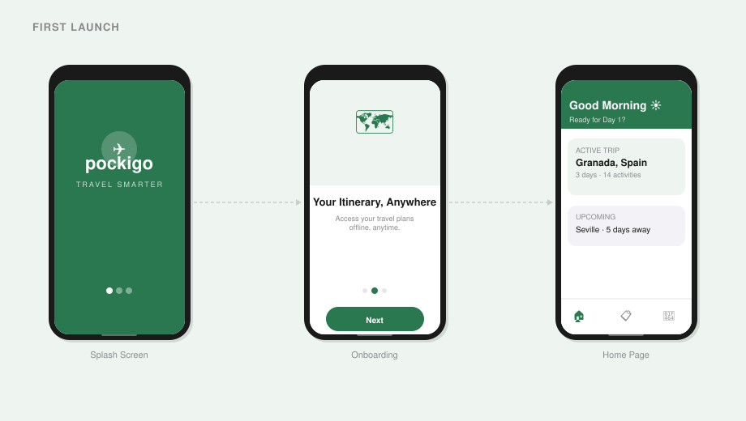
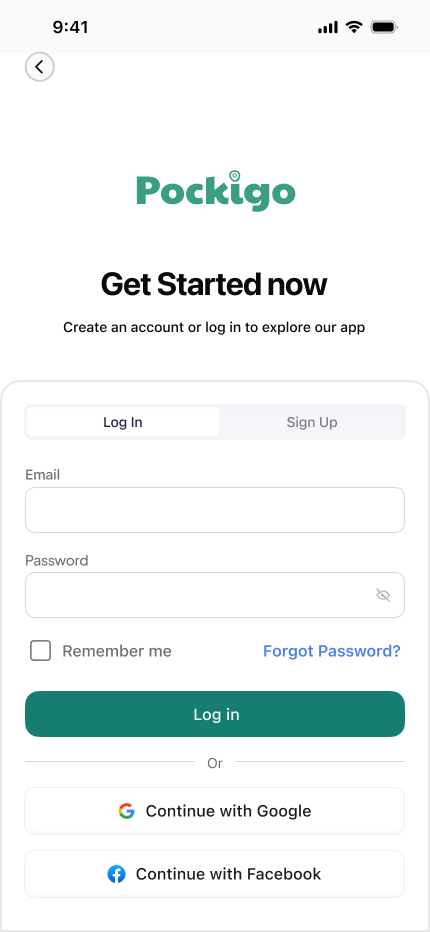
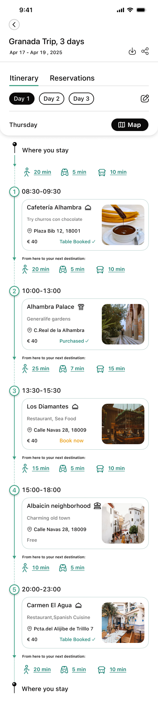
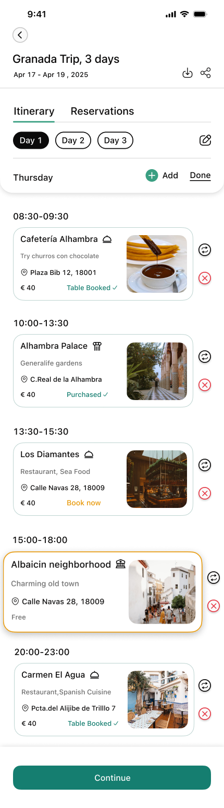
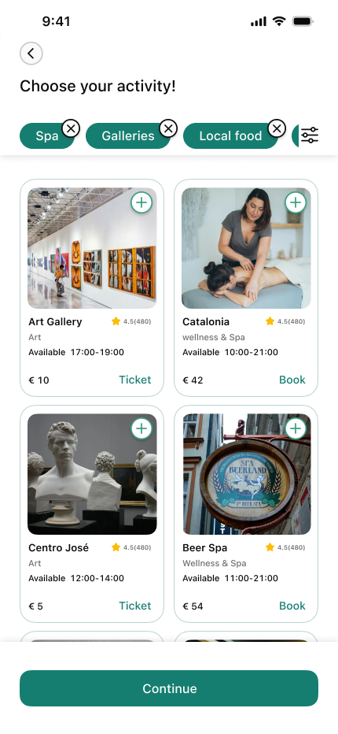
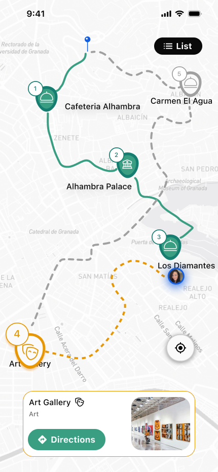
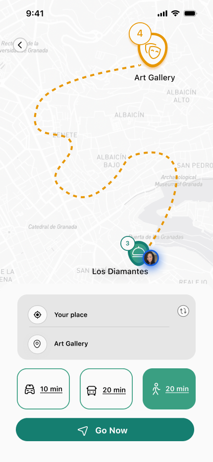
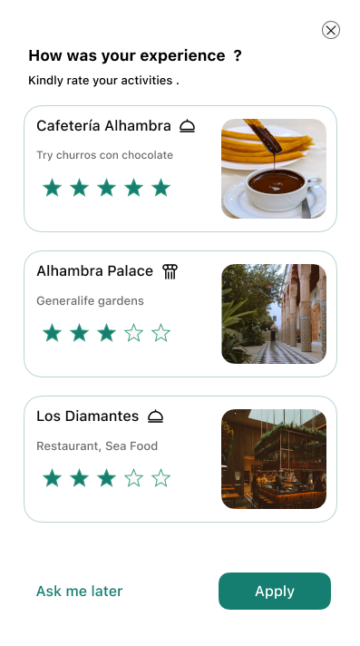

What is Pockigo?
Pockigo is a travel planning platform that creates personalised itineraries based on users' preferences. Travellers can view, edit, and optimise their plans while accessing all essential information in one place.
This case study focuses on the mobile experience — specifically the "Tracking the Itinerary" task. While the web platform handles planning before travel, the mobile app is the companion during the trip itself.
Problem Statement
"Users struggle to stay on track and adapt their itineraries while travelling — needing real-time guidance, offline access, and easy modification on the go."
What we set out to build
Business Needs
- Offline access to itinerary data
- Interactive map with route optimisation
- Real-time location tracking — auto-updates the itinerary
- Easy itinerary sharing with travel companions
- Flexible modification and filtering
- Activity rating system
Design Goals
- Visually appealing and functional interface
- Smooth and convenient navigation and tracking
- Enable users to quickly find and choose alternative activities
Research & insights
We used the Double Diamond method, bouncing between stages as the project evolved. We started with 20 user interviews to understand how travellers manage their itineraries on the go, what frustrates them mid-trip, and what information they need most.
Key Insights from Affinity Diagram
Information Fragmentation
Users switch between multiple sources — maps, blogs, transport apps, reviews — just to access basic trip info during travel.
Personalisation & Flexibility
Plans always change. Users want to quickly adjust their itinerary and get smart alternatives when circumstances shift.
Social Proof
Users rely heavily on others' experiences when choosing activities. Ratings and reviews drive confident decision-making.
Route Optimisation
Users prefer to group nearby places and need clarity on transport options between stops to minimise wasted time.
Offline Accessibility
Travellers frequently lose connection abroad and need core itinerary details available without internet access.
Collaborative Planning
Groups need shared access so everyone can view and update the trip plan together in real time.
Competitive Analysis
- Tripadvisor — Missing "Get Itinerary" button, limiting quick access to plans.
- GetYourGuide — Low task efficiency and no direct itinerary access.
- Tripographer — Poor navigation, limited category variety, weak activity readability.
Card Sorting
To define clear and intuitive activity categories, we ran a card-sorting session where participants organised activities into groups and named each cluster. This validated our category structure and helped us choose labels that match real users' mental models.
Turning research into direction
We built a persona around a traveller who needs real-time guidance during their trip — someone relying on their phone to stay on schedule, adapt plans, and navigate efficiently.
A user flow was mapped for the core task: opening the app on arrival, viewing today's itinerary, tracking location, and modifying an activity on the fly. This guided every design decision.
Launch & Onboarding
App Launch → Splash Screen (2 sec) → Onboarding: Personalized → Offline Access → Real-time → Home Screen
Authentication
My Itineraries → Logged in? Yes → Itinerary List (Active / Upcoming) | No → Auth Gate → Google Sign-In (One tap)
Trip Selection
Day View (Progress bar) → Day 1 Overview (3 activities) → Select Trip Granada — Day 1
Map View
Map View (Pins + route) ⇄ Toggle with Activity Progress view
Activity Progress
Activity 1 ✓ Alhambra → Activity 2 ✓ Generalife → Activity 3 Casa Mistral → Fits Plan? Yes → continue | No → Edit Flow
Edit Flow
Select & Add Arrayana 4.7★ → AI Suggestions Nearby places → Browse Categories Dining / Culture → Edit Mode Remove activity
Day Complete
Day 2 Preview Sacramento — 4 acts → Home Summary 3 places, 2.1 km → Push Notification "Day 1 Complete!"
Wireframing & iteration
After low-fidelity wireframing and usability testing, two major screens required redesign based on user feedback:
Home Screen Redesign
The initial home screen distracted users with too many options. The progress bar for the trip day was impractical. We redesigned it with a timeline view showing all activities, their scheduled time and location. Day/night activities are distinguished with sun and moon icons. Activity suggestions were removed to keep focus on managing the current day.
Itinerary Screen Redesign
We removed the unnecessary city photo for a cleaner layout, added a reservation section for quick access to bookings, highlighted the map button, and showed the user's current location at the top — including time and route to their first destination.
Itinerary Editing Redesign
Previously, deleting an activity required a long-press or tapping an edit icon. In the new design, long-pressing offers both delete and replace options. An Add Activity section was consolidated directly on the itinerary screen, creating a more focused editing experience.
Final design
Green was chosen as the primary colour to convey life, movement, and the spirit of travel. Lighter and darker shades maintain visual harmony, while orange was selected as the accent colour to highlight key actions and bring energy to the interface.
All primary and secondary button colour combinations were tested for colour blindness contrast accessibility before finalisation.
- Timeline-based home screen for clear daily overview
- Real-time GPS tracking with automatic itinerary updates
- Offline mode for core itinerary data
- Flexible activity editing — replace or delete from one long-press
- Interactive map with route and transport visibility
- High-fidelity prototype validated through usability testing
Walking through the app
These hi-fidelity screens walk through the core user journey — from first launch through a full day of travel, navigating stops, editing plans, and wrapping up the day.
First Launch
The user opens Pockigo for the first time. A brief onboarding flow introduces the app's key features — itinerary tracking, map navigation, and offline access — before prompting sign-up.

Authentication Gate
Before accessing their itinerary, users sign in or create an account. The screen is intentionally minimal — a single call-to-action keeps friction low and momentum high.

Day 1 — Following the Plan
The home screen greets the user with today's itinerary as a numbered timeline. Each stop shows its name, scheduled time, and transport indicator — giving a clear overview of the full day at a glance.

Edit on the Go
Plans change. The itinerary shifts into edit mode with a single tap — each activity gains a remove button and a drag handle. When a stop is deleted, the app immediately offers a replacement, surfacing a curated activity grid filtered by category.


Map View
Tapping the map icon reveals all stops as numbered pins connected by a green route line. The active destination card slides up from the bottom. One tap on "Directions" switches to turn-by-turn mode — an orange dashed line shows the exact path with an estimated walk time.


Day Complete
After completing the last activity, the app celebrates the day and invites the user to rate their experience. The star-rating screen closes the loop — feeding the social proof system that helps future travellers.
